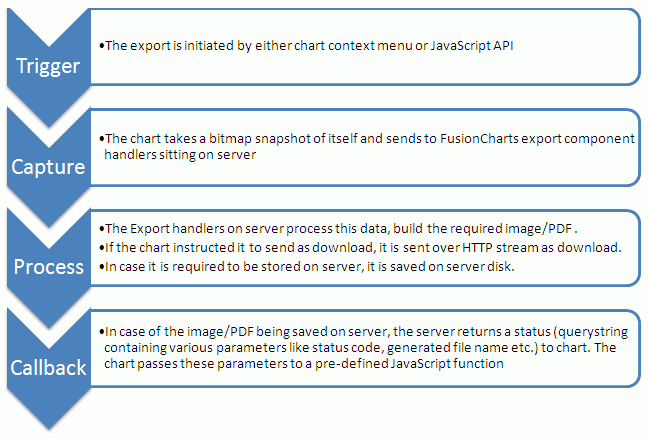

Exporting Charts as PDF or Images > Server-side export > Overview |
| The export process, when using server-side Export Handlers, can be visualized as under: |
|  |
As shown above, when exporting the charts as images/PDFs using server-side Export Handlers, there are two actions that you can choose from:
Please note that in both cases, the chart first needs to render in a browser, before the bitmap snapshot can be sent to server for processing. You CANNOT directly generate an image of chart on server, without actually rendering it in browser. |
| Elements involved |
For enabling export of chart at server-side, we'll need to assemble the following elements:
So let's quickly get started and setup a simple example that exports the chart as an image and sends it back to browser (for the user to save). |